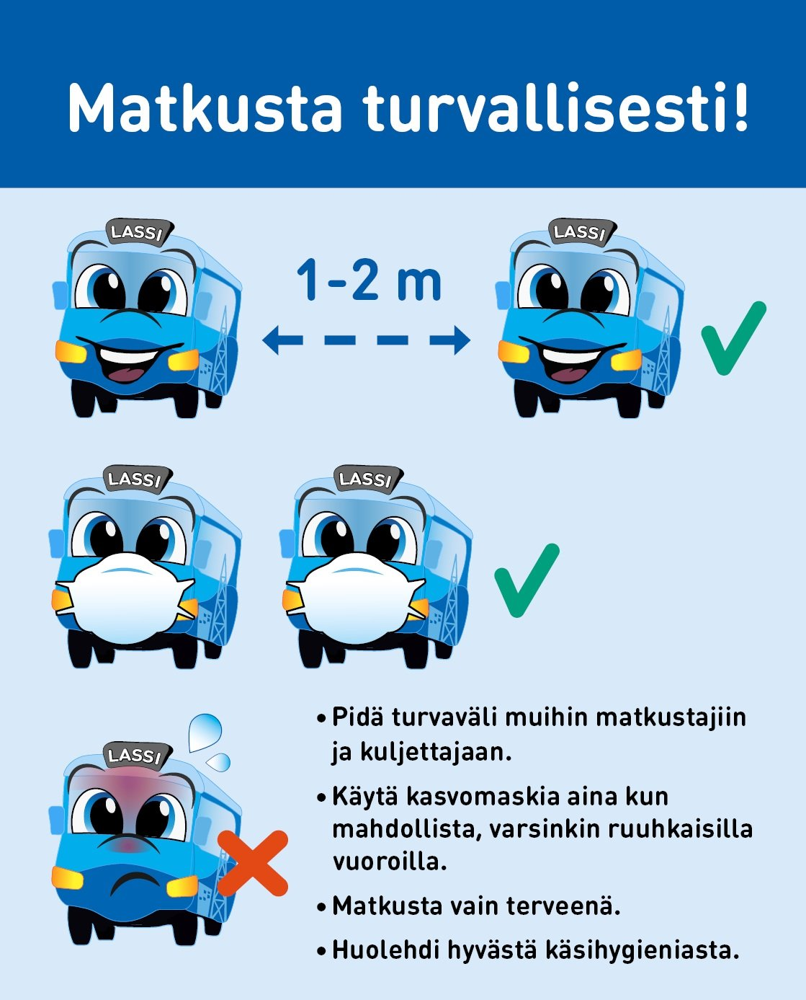

Koronaviestintä
Tausta
Koronapandemia vaikutti joukkoliikenteeseen monella tavoin. Koronaviestintää leimasi tilanteiden nopea muuttuminen ja häiriöiden vaikutus laajasti niin liikennöintiin, maksamiseen kuin bussissa käyttäytymiseen.
Viestinnässä tuli huomioida viestien erilainen painokkuus: esimerkiksi maskin käyttö oli ensin pakollista, myöhemmin viestin sävy muuttui lievemmäksi suositukseksi.
Tärkeää oli myös yhteydenpito sidosryhmiin, jotta myös heillä oli aina ajantasainen tieto. Sähköposteja muutoksista lähetin esimerkiksi liikennöitsijöille, asiakaspalvelupisteisiin, liikennöintialueen kuntien yhteyshenkilöille ja kouluille.
Häiriötiedotus on osa joukkoliikenteen tavanomaista viestintää. Olen tehnyt häiriötiedotusta muun työn ohella ja priorisointi akuuteissa tilanteissa on tuttua. Siksi minulla oli hyvät valmiudet reagoida nopeasti myös koronan aiheuttamiin muutoksiin.
Toteutus
Koronaviestinnässä tärkeää oli selkeät viestit, jotka oli saatava matkustajille nopeasti. Siksi käytin kaikkia LSL:n käytössä olevia viestintäkanavia eli verkkosivuja (omia ja jäsenkuntien), mobiilipalveluja, sosiaalista mediaa, pysäkkinäyttöjä, lehti-ilmoituksia ja erilaisia printtimateriaaleja. Verkkosivuille loin yhden sivun, jolle päivitin ajantasaisen tiedon.
Lahden seudun liikenteen busseissa ei ole näyttöjä, joten esimerkiksi käteisen väliaikaisesta lakkauttamisesta, bussivuorojen harventamisesta ja maskisuosituksista oli laadittava julisteita ja tarroja busseihin kiinnitettäviksi.
Viestinnässä pyrin käyttämään tekstin tukena informatiivisia kuvia. Grafiikoissa ja kuvissa käytin sekä kuvapankkikuvia, että omia valokuviani ja grafiikoitani. Matkustusohjeissa hyödynsin aiemmin citylinjoille toteuttamaani sarjakuvamaista bussihahmoa. Myös maskisuositustarran suunnittelin kokonaan itse. Materiaalit toteutin pääasiassa Adoben Photshopilla, InDesignilla ja Illustratorilla.
Busseihin liimattava ohjetarra

Lassi-citybussin hygieniaohjeet
Jälkipuheet
Koska tein koronaviestintää yksin, vaati tilanne joustamista työajoissa ja henkilökohtaisessa elämässä. Koronapandemia olikin kaiken kaikkiaan mielenkiintoinen elämänvaihe, kun etätöihin siirryttyäni samaan aikaan myös lapset olivat suositusten mukaisesti päivät kotona poissa koulusta. Tämä aikakausi oli erinomainen tulikoe, jossa joustavuus, luova ongelmanratkaisu, nopea päätöksentekokyky sekä priorisointitaidot testattiin. Eiväthän ns. normaalit työt kuitenkaan olleet työpöydältäni kadonneet ja bonuksena vauhdikkaiden tiedotuskäänteiden päälle oli lisäksi askartelu- ja läksykerhot organisoitavana.
Kaikesta selvittiin - myös koronasta!